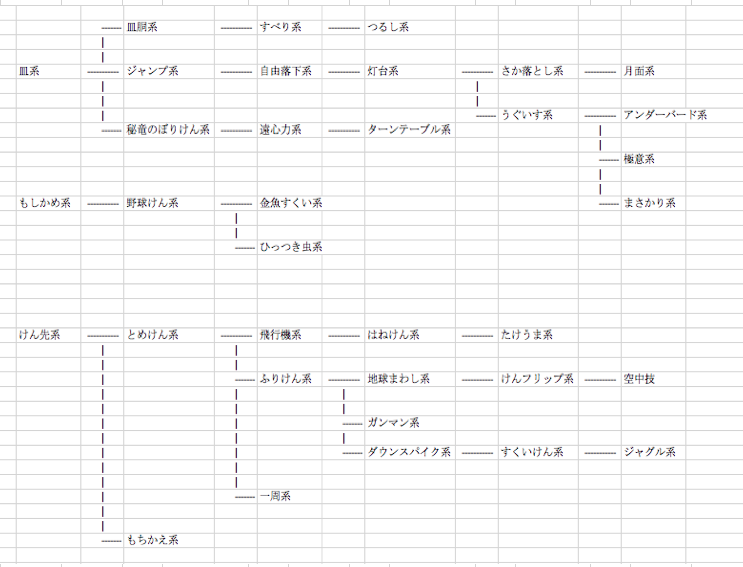

quest_tree: { Initial: ['Cup', 'Moshikame', 'Kensaki'], Cup: ['Sarado', 'Jump', 'CurlSpike'], Sarado: ['Slip'], Slip: ['Hanging'], Jump: ['FreeFall'], FreeFall: ['Lighthouse'], Lighthouse: ['FallingIn', 'Bird'], FallingIn: ['Luner'], Bird: ['UnderBird', 'Wing', 'Axe'], CurlSpike: ['CentrifugalForce'], CentrifugalForce: ['TurnTable'], Moshikame: ['Baseball'], Baseball: ['ScoopingGoldfish', 'ThumbTrap'], Kensaki: ['Spike', 'Turnover'], Spike: ['Airplane', 'SwingSpike', 'Around'], Airplane: ['JStick'], JStick: ['Stilt'], SwingSpike: ['EarthTurn', 'Gunslinger', 'Downspike'], EarthTurn: ['Flip'], Flip: ['Aerial'], Downspike: ['Stuntplane'], Stuntplane: ['Juggling'], },
ja: model: quest_tree: Aerial: '空中技系' Airplane: '飛行機系' Around: '一周系' Axe: 'まさかり系' Baseball: '野球けん系' Bird: 'うぐいす系' CentrifugalForce: '遠心力系' Cup: '皿系' CurlSpike: '秘竜のぼりけん系' Downspike: 'ダウンスパイク系' EarthTurn: '地球まわし系' FallingIn: 'さか落とし系' Flip: 'けんフリップ系' FreeFall: '自由落下系' Gunslinger: 'ガンマン系' Hanging: 'つるし系' JStick: 'はねけん系' Juggling: 'ジャグル系' Jump: 'ジャンプ系' Kensaki: 'けん先系' Lighthouse: '灯台系' Luner: '月面系' Moshikame: 'もしかめ系' Sarado: '皿胴系' ScoopingGoldfish: '金魚すくい系' Slip: 'すべり系' Spike: 'とめけん系' Stilt: 'たけうま系' Stuntplane: 'すくいけん系' SwingSpike: 'ふりけん系' ThumbTrap: 'ひっつき虫系' TurnTable: 'ターンテーブル系' Turnover: 'もちかえ系' UnderBird: 'アンダーバード系' Wing: '極意系' en: model: quest_tree: Aerial: 'Aerial' Airplane: 'Airplane' Around: 'Around' Axe: 'Axe' Baseball: 'Baseball' Bird: 'Bird' CentrifugalForce: 'Centrifugal force' Cup: 'Cup' CurlSpike: 'Curl Spike' Downspike: 'Downspike' EarthTurn: 'Earth Turn' FallingIn: 'Falling In' Flip: 'Flip' FreeFall: 'Free Fall' Gunslinger: 'Gunslinger' Hanging: 'Hanging' JStick: 'J Stick' Juggling: 'Juggling' Jump: 'Jump' Kensaki: 'Kensaki' Lighthouse: 'Lighthouse' Luner: 'Luner' Moshikame: 'Moshikame' Sarado: 'Sarado' ScoopingGoldfish: 'Scooping Goldfish' Slip: 'Slip' Spike: 'Spike' Stilt: 'Stilt' Stuntplane: 'Stuntplane' SwingSpike: 'Swing Spike' ThumbTrap: 'Thumb Trap' TurnTable: 'Turn Table' Turnover: 'Turnover' UnderBird: 'Under Bird' Wing: 'Wing'